En väderapp som säger hur säker den är
Behöver jag jacka om jag går ut nu?
Nimbus svarar på just den frågan, med enkla ord, innan du öppnar något annat. Varje svar säger hur mycket det går att lita på. Inget konto, inga annonser, ingenting lämnar telefonen.
- Inget konto
- Inga annonser
- Ingen spårning
- Aldrig ett påhittat tal
Den här rundturen visar appen i läget Användare, så som de flesta använder den. Byt till Expert högst upp så ser du källorna, formlerna och stegen bakom varje tal.
Du läser rundturen i läget Expert. Rutor med streckad kant visar vad appen lägger till i Expertläget: källnamn, formler och steglängder.
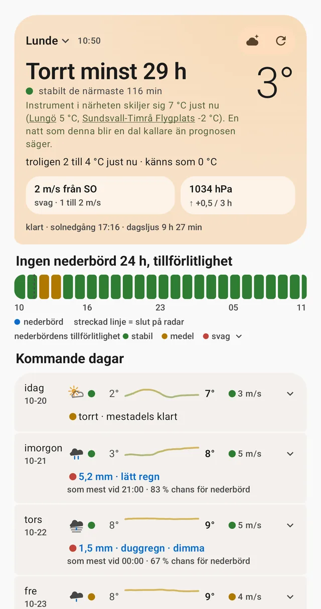
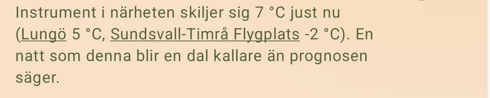
01 · NU
Först svaret. Detaljerna när du frågar.
Du öppnar appen och översta kortet säger redan vad de närmaste timmarna bär med sig: torrt, regn, vind, dimma. En stor temperatur och en rad om hur det verkligen känns.
- Läs beskedet - ”Torrt minst 30 h” eller ”Regn om 40 min”, med en färgad prick för hur mycket du kan lita på det.
- Se de nästa 24 timmarna som ett band - varje timme är färgad efter hur säker prognosen är, och radarns räckvidd är markerad.
- Titta på kommande dagar - lägsta och högsta temperatur, vind, nederbörd och en tillförlitlighetsprick för varje dag. Öppna en dag för mer.
- Dra nedåt för att uppdatera, eller tryck på pilen. Tryck på rutan för vind eller tryck så hoppar du direkt till dess diagram.
Expert lägger till
- Under beskedet: hur tillförlitligheten räknas ut och varför den sjunker ungefär tre timmar framåt.
- Modellen bakom platsen, till exempel
MET Nordic 1 km, i platslistan.
02 · FÖRTROENDE
Ärligt, inte självsäkert.
De flesta väderappar ger varje tal samma lugna auktoritet. Det gör inte Nimbus. När en källa inte har något att säga säger appen det, i stället för att visa en nolla. När den bara gissar timmen mellan två verkliga säger den också det.
De här tre visas alltid olika, i båda lägena. En uppmätt bild ser aldrig ut som en förutsagd.
Expert lägger till
- Tillförlitlighet är samsyn i en ensemble: hur många av de oberoende körningarna som säger samma sak. I Tjeckien och Tyskland är det
ICON-D2, 20 medlemmar, i ungefär två dygn, sedanECMWF IFS025, 51 medlemmar. Annars är det ECMWF. - Det är inte chansen för regn. En säker uppskattning av trettio procents chans för regn är inte en trettio procent säker uppskattning.
- Ett värde som appen inte kan mäta visas som saknat, aldrig som låg tillförlitlighet.
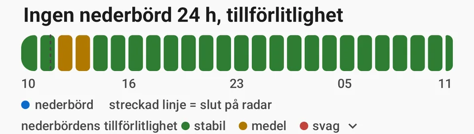
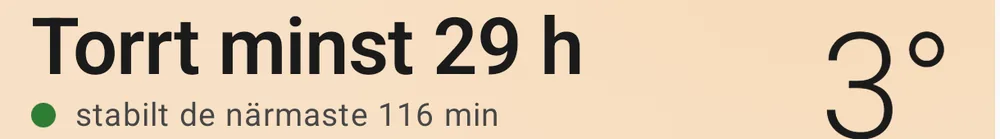
03 · STATIONER I NÄRHETEN Nästa version
”Min termometer visar 5, appen säger 8.”
En klar, stilla natt kan luften skilja flera grader på några kilometer: havet håller kusten uppe och kall luft rinner ner i dalarna. När mätstationerna runt dig skiljer 3 grader eller mer säger Nimbus det på översta kortet och nämner den varmaste och den kallaste.
- Tryck på en stations namn så öppnas den nationella väderleksbyråns sida med stationen redan vald.
- Håll in så öppnas den råa mätningen bakom talet.
- Den rättar aldrig prognosen. Den säger bara vad det är för natt, så att en kall trädgård inte kommer som en överraskning.
Expert lägger till
- Minst tre stationer inom 60 km, var och en avläst de senaste två timmarna. Med färre finns inget svar, och kortet tiger i stället för att kalla luften jämn.
- De tre graderna är samma tröskel som appen använder för ”behöver jag jacka eller inte”.
- Källa: SMHI:s stationsnät, timavläsningar. Utanför Sverige finns inget svar än.
Stationsnamnen är länkar. Ett långt tryck går till själva datan.
04 · RADAR
Formen på det som kommer.
En karta med tidsreglage. Dra bakåt för att se var det har regnat, framåt för att se vart regnet är på väg. Bredvid det uppmätta regnet finns fyra prognoslager, och ett femte visar norrskenet.
- Spela, pausa, dra. Reglaget når upp till 10 timmar bakåt och framåt så långt du väljer, i Norden ungefär två dygn.
- Välj lager - regn, temperatur, vind, moln. Molnen kan delas upp i låga, mellanhöga och höga.
- Regn eller snö. En omkopplare över kartan skiljer intensiteten från typen av nederbörd.
- Läs teckenförklaringen. Färgskalan ligger över kartan och anger enheten. Temperaturskalan vänder vid fryspunkten.
- Zoom med en hand. Dubbeltryck för att zooma in, eller dubbeltryck, håll tummen nere och dra.
- Under kartan en mening med enkla ord: ”Närmaste regn 41 km åt norr. Uppmätt av radar. Ingen prognos.”
Expert lägger till
- Den uppmätta bilden är SMHI:s radarkomposit med bilder fem minuter isär. Regnintensiteten räknas ut ur reflektiviteten med
Z = 200·R^1.6och kapas över 55 dBZ, eftersom hagel reflekterar mycket mer än vatten. - Prognoslagren är METs eget modellfält, 1 km, ritat från deras kartserver. Ingen publicerar prognosbilder från radar gratis, så appen låtsas inte ha dem.
- Reglagets främre halva är beräknad radar de första timmarna, sedan timmodellen.
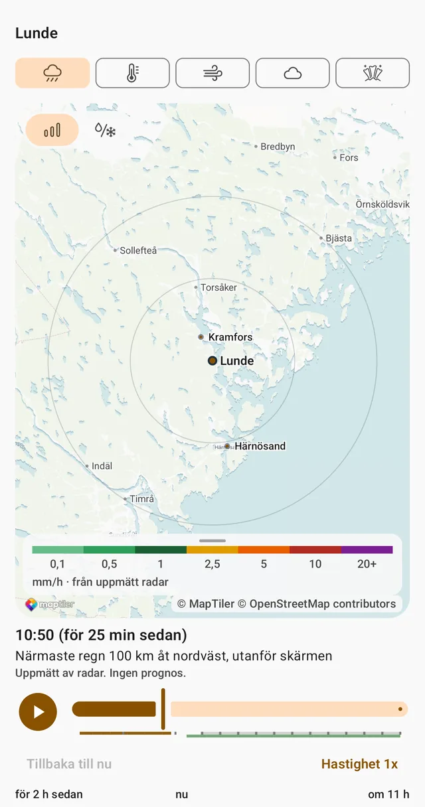
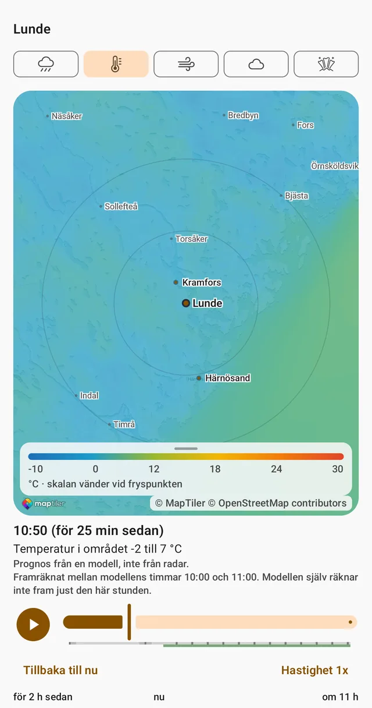
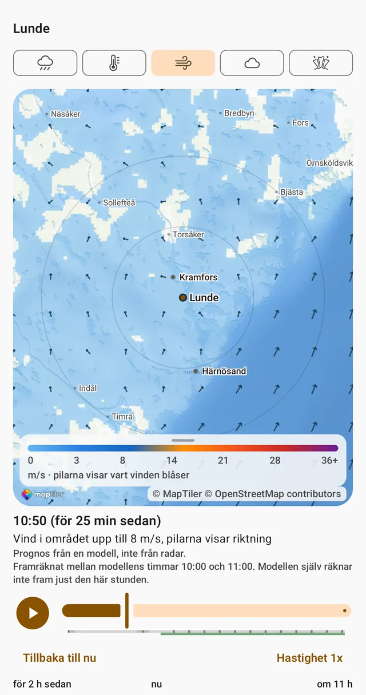
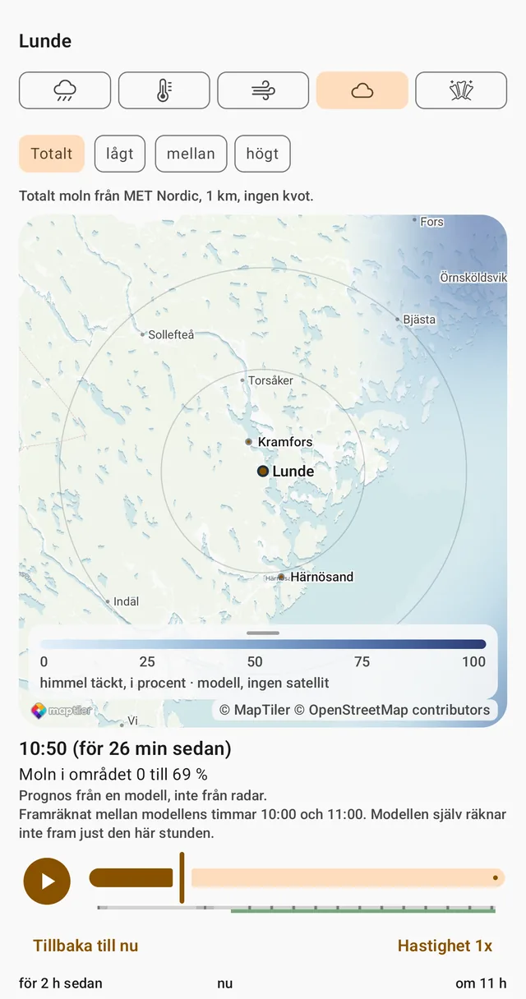
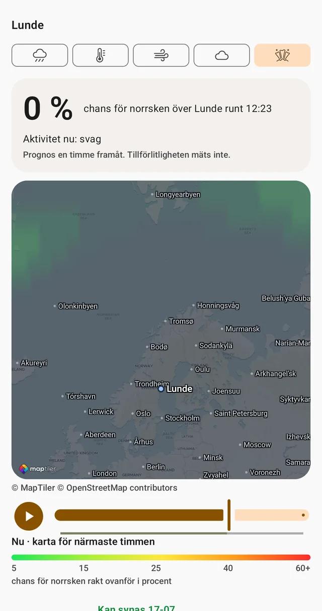
05 · GRAFER
Dagen som en linje.
Temperatur, nederbörd, vind och moln, under varandra på samma tidsaxel. En röd linje markerar nu, och en notis säger hur långt bakåt datan når och att den äldre delen är modellen.
- Välj fönster - 12 timmar, 24 timmar, 3 dagar eller 7 dagar.
- Peka med ett finger och läs av det exakta värdet i det ögonblicket.
- Nyp med två fingrar för att sträcka eller flytta fönstret. En platt natt öppnar sin skala från tjugo grader till tre, så formen syns av sig själv.
- Kommer du från Nu? Ett tryck på rutan för vind eller tryck tar dig till dess diagram.
Expert lägger till
- Raden ovanför diagrammen säger hur långt bakåt datan når och att den äldre delen är modellen, inte det appen såg.
- Värdeaxeln räknas ut ur det som ligger i fönstret, så en inzoomning lämnar aldrig en tillplattad linje.
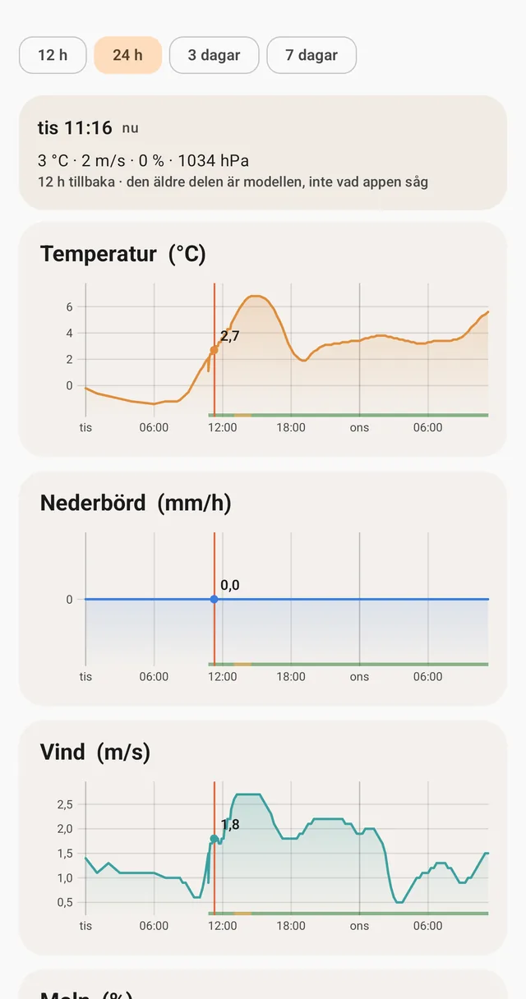
06 · DAGENS
Din dag, del för del, och vad du ska ha på dig.
En skärm som för förmiddag, middag, eftermiddag och kväll säger vad vädret bär med sig och vad du ska ha på dig. Den jämför varje del med samma del i går och visar gårdagsnattens egen spännvidd.
- Solens båge med soluppgång, solnedgång och dagens längd, och dagens lägsta och högsta ögonblick.
- En tidslinje från i natt till kvällen med en markör för nu. Varje del har temperatur, regn, vind, en klädrad och gårdagen.
- En morgonnotis vid den tid du väljer, så att svaret kommer innan du går.
- Tryck på en del så hoppar du till samma tid i Nu.
Expert lägger till
- Gårdagens siffror kommer från appens egen logg över väder som redan har varit, läst per plats. En del utan registrerad avläsning visar ingenting.
- Med behörigheten för exakt alarm skickas notisen på den valda minuten, annars inom den 30 minuter långa uppdateringscykeln. Inställningar visar vilket som är aktivt.
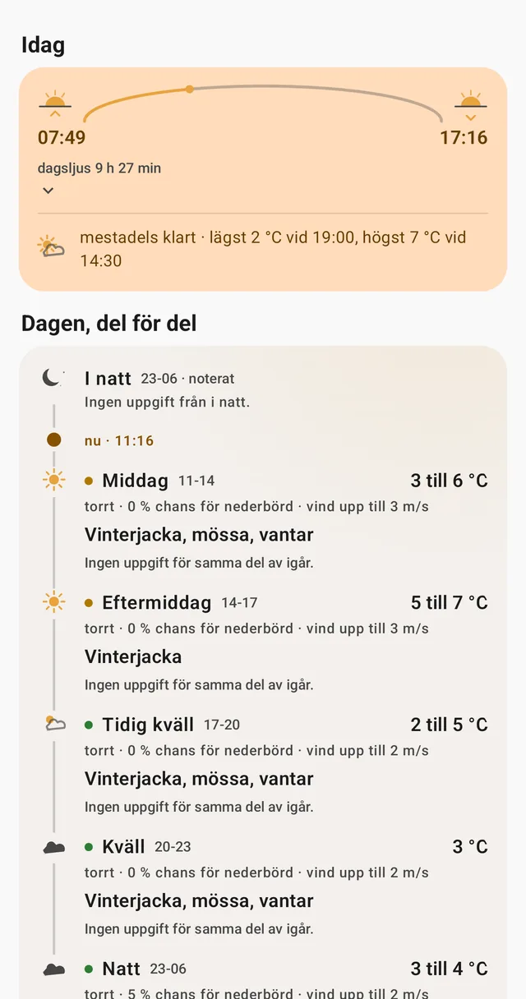
07 · VARNINGAR
Officiella varningar för varje plats du har.
Vad som gäller där du är och på var och en av dina platser, i samma ordning som i Inställningar. ”Inget gäller” sägs rakt ut, och det står också vem som svarar.
- Sverige: varningar från SMHI. Tjeckien och Tyskland: de nationella tjänsterna via MeteoAlarm.
- Notiser om regn på väg, kraftig vind och officiella varningar, så att du får veta utan att öppna appen.
Expert lägger till
- SMHI publicerar ett flöde för hela landet. En varning täcker ett ritat område, så appen kontrollerar om din plats ligger inuti.
- Vindnotisen använder samma gränsvärde för vindbyar som klädrådet och hålls tillbaka när appen inte är säker nog för att väcka dig.
- Loggen över notiser som faktiskt skickats visas här bara i Expertläget.
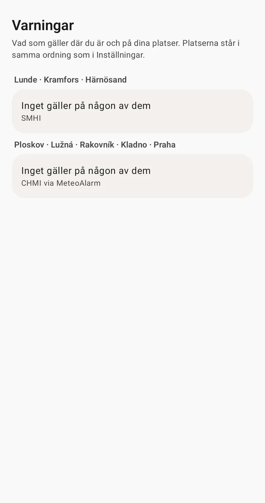
08 · NORRSKEN
Lyser himlen upp i natt?
Det sista lagret på radarn är inte väder utan norrsken. Det öppnas på en stor nattonad karta med norrskensovalen, och ovanför den chansen att se det över din plats, med enkla ord.
- Först ett tal: chansen för norrsken rakt ovanför om ungefär en timme, och aktiviteten nu med ett ord - svag, måttlig, stark, mycket stark.
- De kommande nätterna, en rad för varje: ”I natt”, ”I morgon natt”, sedan efter veckodag, med de timmar då det kan synas.
- Riktiga platser på kartan, så att du kan läsa ovalen mot städer du känner till.
Expert lägger till
- Data från NOAA SWPC: modellen OVATION för ovalen, Kp-indexet för aktiviteten. Aktivitetsintervallen följer NOAA: Kp 0-2 svag, 3-5 måttlig, 6-7 stark, 8-9 mycket stark.
- Ovalen ritas kontinuerligt. Varje ritat värde ligger mellan fyra publicerade rutnätspunkter. Färger: grönt från 5 %, gult 25, rött 60 och uppåt.
09 · PLATSER
En plats, överallt.
Välj platsen appen handlar om, eller låt den följa dig. Vad du än väljer är platsen som skärmarna, widgeten och notiserna alla talar för, så de säger aldrig emot varandra.
- Ha flera platser i den ordning du vill. Fem tjeckiska platser finns från början, och Lunde, Kramfors och Härnösand för det svenska hemområdet.
- Följ min position så flyttar sig prognosen med dig. Kommer du tillbaka till appen frågar den var du är igen.
- Inga påhittade gatunamn. En adress visas bara för en exakt position, eftersom ett gatunamn för en avrundad position skulle vara påhittat.
Expert lägger till
- Under varje plats den modell som svarar för den, till exempel
MET Nordic 1 km. - Vilken källa som talar för en plats avgörs per koordinat utifrån modellens verkliga täckning, aldrig efter land.
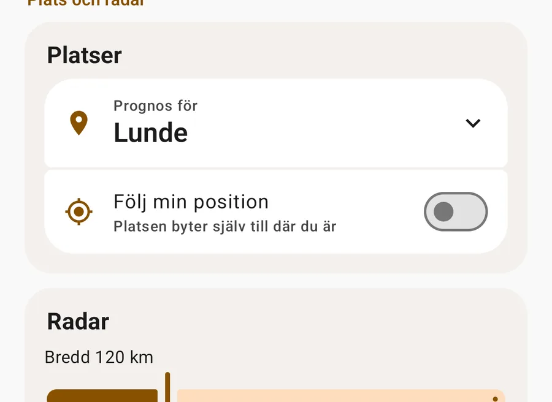
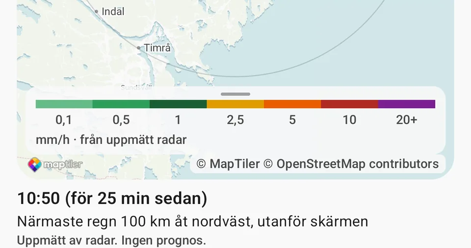
10 · UTAN ATT ÖPPNA APPEN
Svaret där du redan tittar.
Appens första uppgift är att svara innan du har tagit på dig skorna. Widgeten och klockan finns för det, kartan kommer först tredje.
Widget på hemskärmen
Tid, datum och väder i en blick: temperaturen nu, hur det känns och de närmaste timmarna, var och en med en tillförlitlighetsprick. Välj stil, textstorlek, plats, nedre raden och vad ett tryck öppnar.
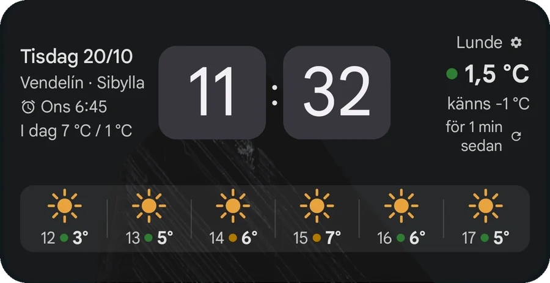
Widgeten på hemskärmen, i den stora klockstilen.
Expert lägger till
Widgeten och notiserna använder samma plats som appen. Deras text har ingen enklare tvilling, den är densamma i båda lägena.
Klocka med Wear OS
Svaret, temperatur, vind, timmarna och veckan framåt, varningar och solen, plus en ruta och en komplikation för urtavlan. Telefonen skickar datan. Sidorna ordnar du i Inställningar.
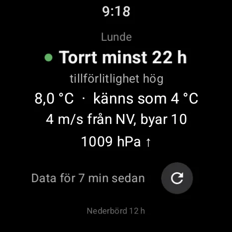
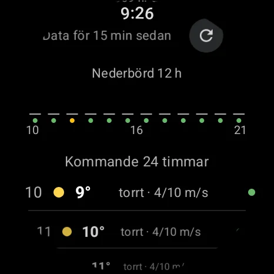
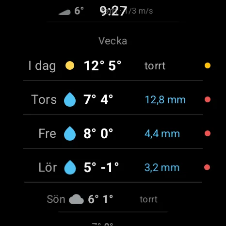
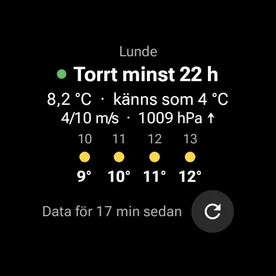
Expert lägger till
Klockan öppnas på Nu, sedan följer Timmar, Vecka och Varningar i den ordning du ställer in. Sidan Varningar visas bara när något är känt om varningar för platsen.
11 · KÄLLOR
Var varje siffra kommer ifrån.
En skärm listar varje källa, vad den ger och vilken som svarar för platsen du tittar på. Om en källa inte svarar säger appen det.
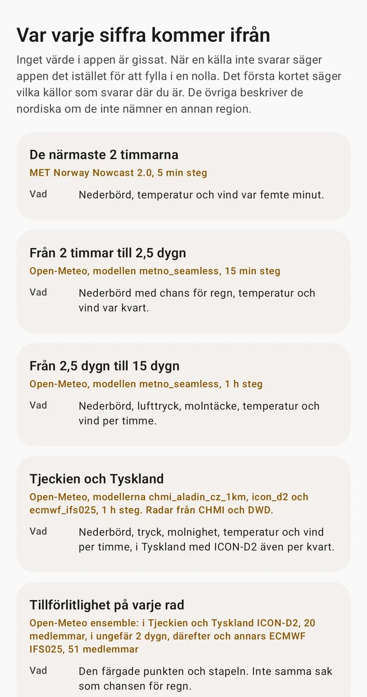
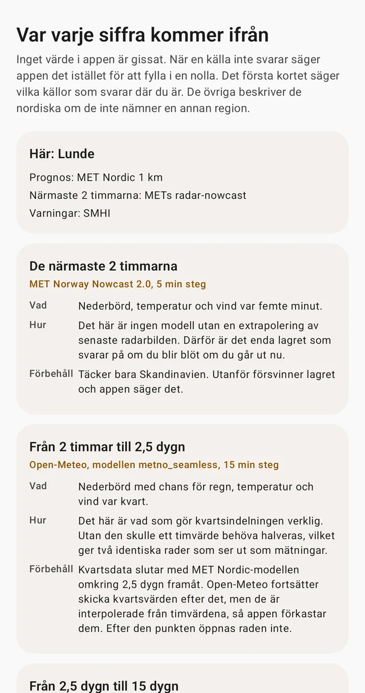
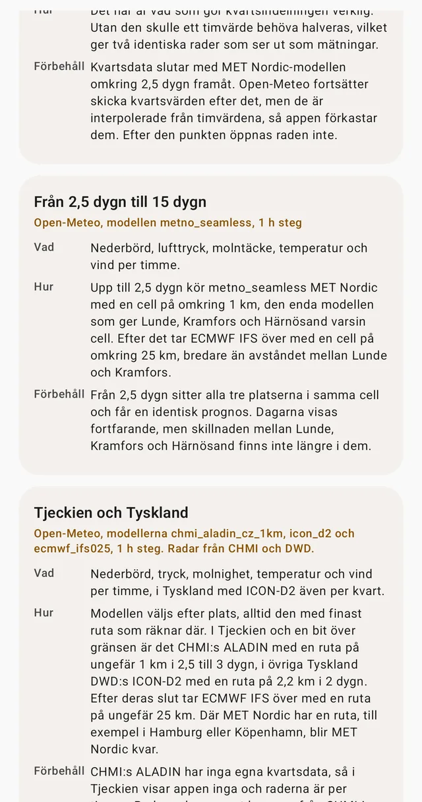
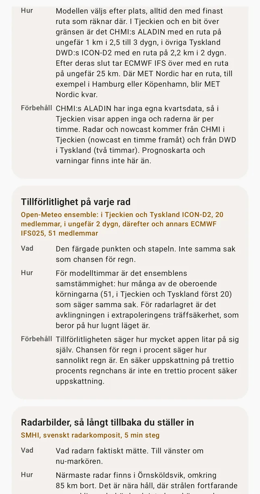
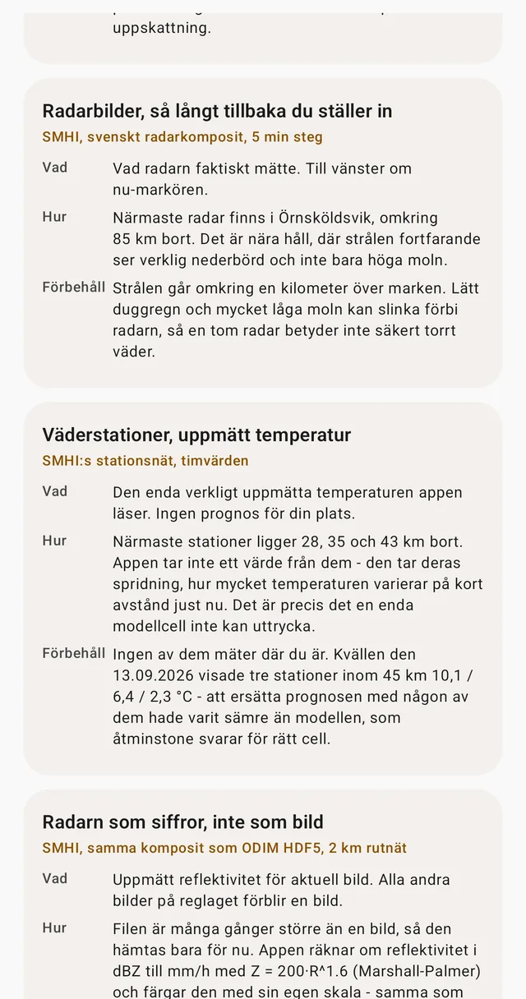
Byt till Expert högst upp så ser du hur varje tal räknas ut och vad varje källa inte kan säga.
Varje kort har Vad, Hur och Förbehåll. Förbehållet är den ärliga delen: vad källan inte kan säga.
12 · DÄR DET FUNGERAR
Bäst där den byggdes, bra även utanför.
Nimbus byggdes för två områden och är mest exakt där. Den klarar också resten av Norden, hela Tjeckien och Tyskland.
Norden
En mycket fin prognosruta, radar-nowcast i femminuterssteg för de närmaste två timmarna och officiella varningar från SMHI i Sverige. Mest exakt kring Kramfors och Härnösand.
Expert lägger till
MET Nordic, en ruta på ungefär 1 km. Efter de få dygn de fina modellerna räcker tar ECMWF över, och appen säger från när.
Tjeckien
Den tjeckiska vädertjänstens egen mycket fina modell och radar, med egen nowcast en timme framåt. Ploskov, Lužná, Rakovník, Kladno och Praha finns i platslistan från början.
Expert lägger till
CHMI ALADIN, ungefär 1 km, per timme. Varningar via MeteoAlarm.
Tyskland
Den tyska vädertjänstens modell och radar, med nowcast två timmar framåt.
Expert lägger till
DWD ICON-D2 med en ruta på 2,2 km, i kvartstimmar i Tyskland. Radar-nowcast RADVOR.
Appen talar tjeckiska, engelska och svenska, och språket byts i appen.
13 · ANVÄNDARE OCH EXPERT
Så mycket detaljer du vill.
Samma app i två nivåer. En omkopplare i Inställningar, under ”Detaljnivå”. Sidan du läser har samma omkopplare högst upp.
Användare
Visar det du behöver för att bestämma dig.
- Enkla ord och ett svar per skärm
- Tillförlitlighetsprickar och meningar
- Notiser som säger vilken sorts bild du tittar på
Expert
Lägger till arbetet bakom ett tal.
- Käll- och modellnamn
- Formler och steglängder
- Notiser om hur saker räknas ut, och förbehållen
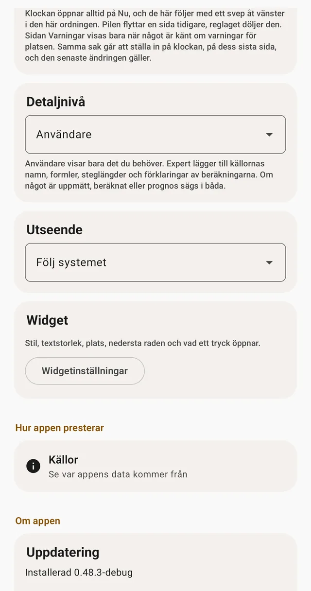